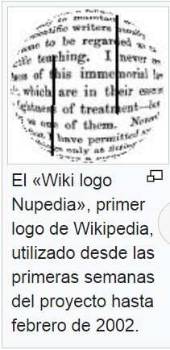

Historia de Wikipedia
Wikipedia, la enciclopedia libre, fue creada el 15 de enero de 2001,
comoproyecto de edición abierta que pretendía agilizar.
y flexibilizar el desarrollo de la hoy extinta
enciclopedia con revisión por pares Nupedia, y
ha crecido continuamente en número de
artículos y de ediciones idiomáticas hasta
la actualidad.
Conflicto de la Wikipedia en español con
Rebelión.org He eliminado la sección
Conflicto de la Wikipedia en español con
Rebelión.org por varios motivos:
Principalmente, porque es irrelevante:
polémicas como ésta ha habido muchas y no
atañen al artículo.
Respecto al párrafo en sí:
Wikipedia es una versión de las enciclopedias en papel. Los primeros pasos en la utilización de artilugios automáticos que superasen la imprenta como medio más ágil y práctico de acceso a los contenidos enciclopédicos se dan en la década de 1930 con la colección de ensayos y discursos World Brain (El cerebro del mundo, aún no publicada en español) (1937) y la visión futurista Memex, de Vannevar Bush para almacenar toda la información relevante de una persona (idea expuesta posteriormente en su obra de 1945 As we may think). Otro hito importante fue el proyecto Xanadú (1960), de Ted Nelson.
Con el desarrollo de Internet, se ha intentado desarrollar enciclopedias en red en múltiples ocasiones. El líder del movimiento de software libre, Richard Stallman, propuso en 1999 la creación de una Enciclopedia Libre y Universal, y declaró que la noticia del nacimiento de Wikipedia era emocionante.[cita requerida] Desde el portal de la Fundación del Software Libre se invita a los usuarios a visitar y contribuir en Wikipedia.[cita requerida]
Jimmy Wales, uno de los fundadores de Wikipedia, cita el ensayo "El uso del conocimiento en la sociedad", escrito por el economista y filósofo de la escuela austriaca y Premio Nobel de Economía Friedrich Hayek, que leyó cuando era estudiante,1 como «central» para su pensamiento acerca de «cómo gestionar el proyecto Wikipedia»2345 Hayek argumenta que la información está descentralizada —cada individuo solo conoce una pequeña fracción de lo que se conoce colectivamente— y, como resultado, las decisiones se toman mejor por aquellos con conocimientos locales, en lugar de por una autoridad central.26 Wales reconsideró el ensayo de Hayek en la década de 1990, mientras estaba leyendo sobre el movimiento de código abierto, que abogaba por la distribución gratuita de software libre. Fue particularmente conmovido por el ensayo "La catedral y el bazar" escrito por uno de los fundadores del movimiento, Eric S. Raymond y adaptado más adelante en un libro. Wales afirmó que ese ensayo «abrió [sus] ojos a las posibilidades de colaboración masiva».1
En marzo de 2000 Jimbo Wales creó Nupedia, un proyecto de enciclopedia libre basado en un ambicioso proceso de revisión por pares, diseñado para hacer sus artículos de una calidad comparable a la de las enciclopedias profesionales gracias a la participación de eruditos (principalmente doctorandos y académicos), a los que se proponía colaborar de modo no remunerado.
Debido al lento avance del proyecto, el 15 de enero de 2001 se creó un wiki (UseModWiki) vinculado a Nupedia cuya finalidad inicial era agilizar la creación de artículos de forma paralela, antes de que estos pasaran al sistema de revisión por expertos. Existe cierta polémica entre los fundadores de Nupedia sobre quién propuso originalmente la idea de usar un wiki a Jimbo Wales, si Larry Sanger o bien una tercera persona,7 pero el caso es que el éxito de aquel "pequeño proyecto paralelo" (Wikipedia) acabó eclipsando a Nupedia, que dejó de funcionar en 2003.
Después de Wikipedia en inglés, la segunda edición en ser creada fue Wikipedia en alemán, el 16 de marzo siguiente, pero inicialmente solo fue usada para pruebas. Desde entonces se han ido creando ediciones en muchos más idiomas.
Harry Geitner, editor responsable de la Nupedia, pasó a colaborar con Wikipedia y trabajó activamente en la organización y directrices del proyecto. Sus aportes marcaron un importante sesgo en la orientación inicial del proyecto, hasta que se desvinculó del proyecto en febrero de 2002. En la actualidad Wales lleva las riendas de la iniciativa, tanto en tiempo dedicado como en recursos, y es miembro de la Fundación Wikimedia, que se ocupa de las tareas de supervisión. En este momento no existe un editor responsable, ni tampoco hay personal contratado a cargo del proyecto. Wikipedia funciona gracias a la contribución voluntaria de miles de wikipedistas.
Inicialmente, no existía el registro de usuarios; toda colaboración se realizaba en forma anónima.
El 20 de septiembre de 2004 Wikipedia alcanzó el millón de artículos en 105 idiomas y causó una considerable atención por parte de los medios de comunicación. El artículo un millón se publicó en hebreo y aborda el tema de la enseña oficial de Kazajistán.
Para el 1 de marzo de 2006 Wikipedia en inglés había sobrepasado el millón de artículos y el 8 de marzo del mismo año Wikipedia en español llegó a los cien mil.
En octubre de 2011, Wikimedia anunció el lanzamiento de Wikipedia Zero, una iniciativa para permitir el acceso gratuito móvil (datos) a la Wikipedia en países del tercer mundo a través de colaboraciones con operadores de telecomunicaciones móviles.89
El 17 de junio de 2015 la Fundación Princesa de Asturias le concedió su premio homónimo en la categoría de Cooperación Internacional.10
El 15 de enero de 2021 Wikipedia celebró su 20 aniversario con una página especial y un banner presente en todas las páginas.11
Se sabe que el 23 de enero de 2020, la Wikipedia en inglés, que es la sección de idiomas más grande de la enciclopedia en línea, cruzó la marca de los 6 millones de artículos. Pero a pesar de este aumento en el número de artículos, la participación global de Wikipedia en Internet, según Alexa, siguió disminuyendo. En febrero de 2020, Wikipedia ocupaba el undécimo lugar en el mundo en términos de tráfico de Internet.12
Sin embargo, como recurso clave para difundir información relacionada con COVID-19, la Organización Mundial de la Salud se ha asociado con Wikipedia para ayudar a combatir la propagación de información errónea.1314

La primera imagen o bandera utilizada en Wikipedia fue
la bandera estadounidense, colocada por Jimbo Wales de
manera precaria y sin intención de que la misma asumiera
la condición de logo del proyecto. De todos modos, el
hecho generó algunas críticas sobre etnocentrismo.15
Pocos días después se diseñó el primer logo de Wikipedia,
conocido como el «Wiki logo Nupedia», que marcaría el
desarrollo del proyecto, como una herramienta auxiliar
de Nupedia. Atribuido erróneamente a Stephen Gilbert,
su autor en realidad no está identificado. Ya en marzo de
2001 el logo se encontraba instalado.
El logo se elaboró superponiendo una frase del escritor y matemático inglés Lewis Carroll sobre un círculo, usando el efecto de ojo de pez para simular una esfera. La frase es una cita en inglés tomada de la página X del prefacio de Euclid and his Modern Rivals (Euclides y sus rivales modernos, publicada en lengua española), comedia en cuatro actos escrita por Lewis Carroll en 1879,16 que dice: